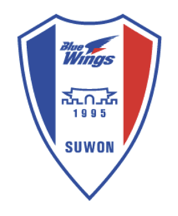
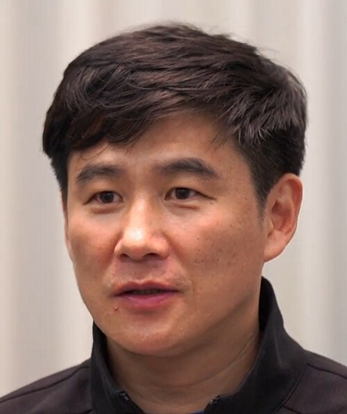
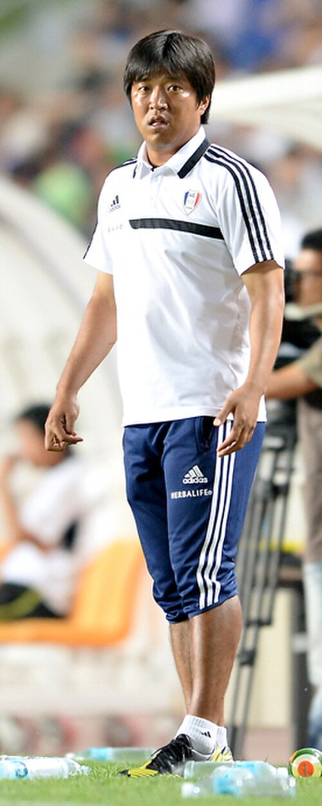
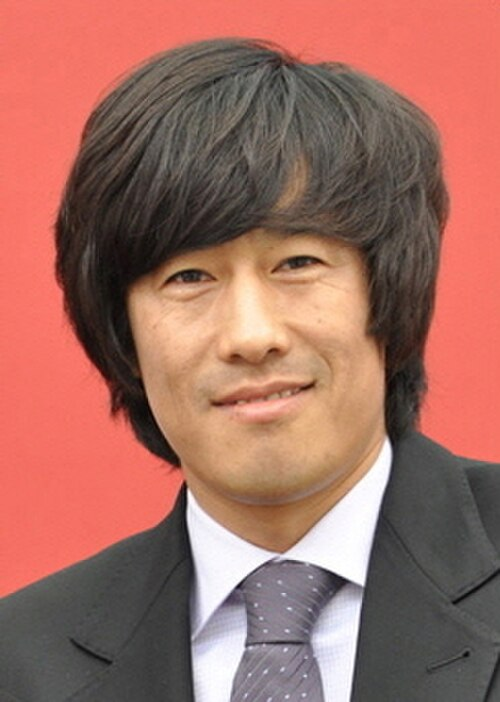
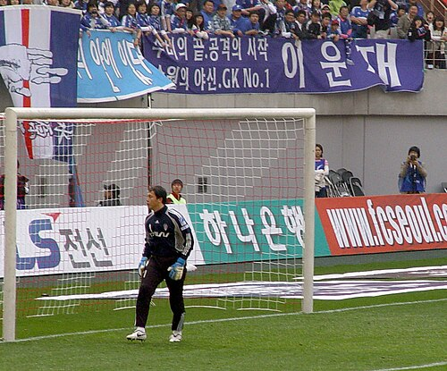
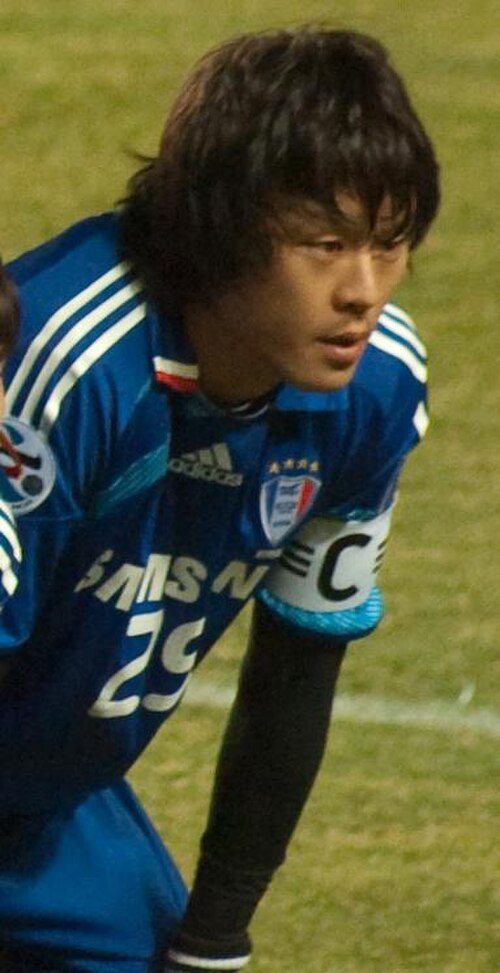
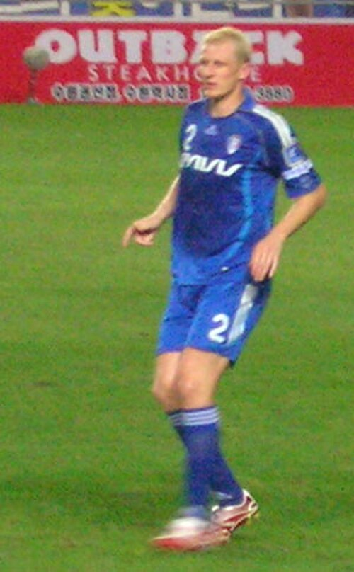
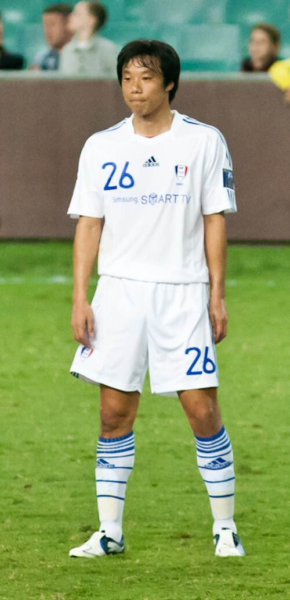

1995
창단
1995년 12월 15일 창단. 수원을 연고로 하는 프로축구단이 출범했습니다.

SINCE 1995
수원 삼성 블루윙즈 온라인 역사관
창단부터 오늘까지 — 전시실을 따라 내려가며 관람하세요
Entrance
수원 삼성 블루윙즈는 1995년 12월 15일 창단해 이듬해 K리그 무대에 올랐습니다. 기업이 아니라 연고 도시의 이름을 앞세운 초기 구단 가운데 하나였고, 수원이라는 도시와 함께 성장했습니다.
1990년대 후반 K리그를 제패했고, 2000년대 초 아시아 정상에 두 번 올랐으며, 2000년대 후반 다시 리그를 들어올렸습니다. 그리고 2023년, 창단 이후 처음으로 2부 강등을 경험했습니다. 이 역사관은 그 영광과 시련을 모두 전시합니다.
제1전시실
창단부터 현재까지, 구단의 방향이 바뀐 순간들만 골라 세웠습니다.
1995
1995년 12월 15일 창단. 수원을 연고로 하는 프로축구단이 출범했습니다.
1996
김호 감독 체제로 리그에 참가. 창단 초기 홈은 수원종합운동장이었습니다.
1998
창단 3년 만에 K리그 우승. 신생 구단이라는 수식어를 지운 시즌입니다.
1999
리그를 연속 제패하고 컵 대회에서도 정상에 오르며 최전성기를 열었습니다.
2001
아시안 클럽 챔피언십(現 AFC 챔피언스리그) 우승과 아시안 슈퍼컵 제패. 같은 해 수원월드컵경기장 빅버드를 새 홈으로 맞았습니다.
2002
아시안 클럽 챔피언십을 연속 우승하고 슈퍼컵도 다시 들어올렸습니다. 같은 해 FA컵까지 제패하며 아시아 최정상 클럽으로 자리매김했습니다.
2004
사령탑이 바뀐 뒤 다시 K리그를 제패하며 왕조의 두 번째 장이 열렸습니다.
2008
통산 네 번째 K리그 정상. 현재까지 구단의 마지막 리그 우승입니다.
2009 · 2010
리그 왕좌에서 내려온 뒤에도 컵 대회에서는 강했습니다. 연속 우승으로 저력을 증명했습니다.
2016
선수로 우승을 경험했던 서정원이 감독으로 다시 트로피를 안았습니다.
2019
통산 다섯 번째 FA컵 우승. 현재까지 구단이 들어올린 가장 최근의 메이저 타이틀입니다.
2023
K리그1 최하위로 시즌을 마치며 창단 이후 처음으로 2부로 내려갔습니다. 역사관은 이 순간도 지우지 않고 전시합니다.
그 이후
1부 복귀를 목표로 한 재건이 진행 중입니다. 이 전시관의 확정 기록은 2023년까지이며, 그 다음 이야기는 아직 쓰이는 중입니다.
제2전시실
진열장에 놓인 메이저 타이틀 13개. 국내와 아시아, 양쪽에서 얻은 은빛입니다.
4회
1998 · 1999 · 2004 · 2008
5회
2002 · 2009 · 2010 · 2016 · 2019
2회
2000–01 · 2001–02
2회
2001 · 2002
제3전시실
푸른 유니폼을 오래, 그리고 깊이 입었던 이름들.

Forward / Midfielder
창단 멤버로 합류해 선수 생활을 수원에서 마친 상징적인 원클럽맨. 훗날 감독으로도 팀을 이끌었습니다.
사진 GOAL TV · CC BY 3.0


Forward · Manager
선수로 우승을 맛보고, 감독으로 돌아와 다시 트로피를 들어올린 흔치 않은 이력의 주인공.
사진 acrofan.com · CC BY-SA 3.0

Midfielder
창단 초기 중원을 책임진 살림꾼. 수원에서만 뛴 원클럽맨으로 왕조의 기틀을 다졌습니다.
자유 라이선스로 공개된 사진을 찾지 못해 비워 두었습니다.



전시된 인물 사진은 모두 위키미디어 공용의 자유 이용 라이선스(CC BY / CC BY-SA / 퍼블릭 도메인) 자료이며, 각 카드에 촬영자와 라이선스를 표기했습니다. 언론사 보도사진 등 저작권이 있는 이미지는 사용하지 않았습니다.
제4전시실
K리그에서 가장 뜨거운 더비. 순위표와 무관하게, 이 경기만큼은 달랐습니다.
수원 삼성 블루윙즈
SUWON
FC 서울
SEOUL
수도권을 나눠 가진 두 구단의 대결은 단순한 라이벌전을 넘어, 리그 흥행을 이끄는 간판 카드가 되었습니다.
서포터스 그랑블루가 만드는 파란 물결은 빅버드의 상징입니다. 슈퍼매치 날의 관중석은 그 자체로 하나의 전시물입니다.
강등과 승격, 세대교체를 지나도 이 경기의 의미는 남습니다. 팬들에게 슈퍼매치는 언제나 시즌의 기준점이었습니다.
Epilogue
2001년 문을 연 수원월드컵경기장은 커다란 새가 날개를 편 형상에서 빅버드라는 별명을 얻었습니다. 아시아를 제패한 밤도, 트로피를 든 오후도, 강등이 확정된 저녁도 모두 이 자리에 기록되어 있습니다.
역사는 끝나지 않았다
{kind=link}
{kind=link}
{kind=link}
{kind=link}
{kind=link}
{kind=link}
{kind=link}